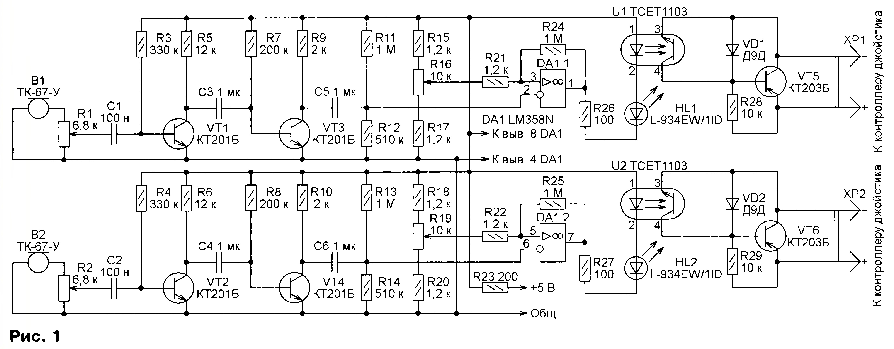
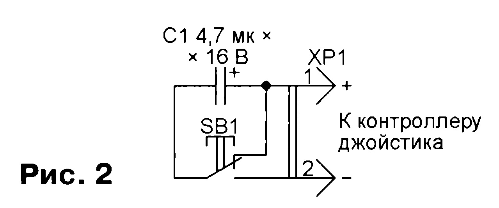
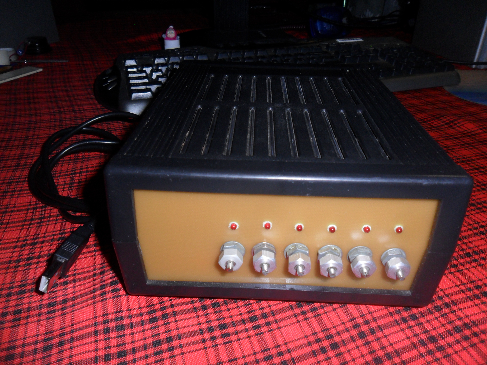

Предлагаемое устройство – имитатор электронных ударных установок, в котором для воспроизведения звуков барабанов использован компьютер с акустической системой. В компьютере должна быть установлена хотя бы самая простая звуковая карта. Звуки барабанов используют в различных игровых и развлекательных программах, но для их воспроизведения обычно требуется нажимать на клавиши компьютера, соответствующие определённому барабану, либо щёлкать мышью по соответствующему изображению на экране, что очень неудобно.
Описываемое устройство создаёт более привычное ощущение игры на барабанной установке, хотя тоже обладает недостатками. Например, громкость извлекаемого звука не зависит от силы удара и всегда одинакова. При быстрой игре случаются пропуски ударов, а иногда за одним ударом следует несколько звуков барабана. Устранить эти дефекты с помощью имеющихся в устройстве органов управления довольно сложно. Из этого следует, что рассматриваемый инструмент не предназначен для профессионального исполнения музыки, но может быть использован начинающим музыкантом.
В качестве датчиков ударов барабанными палочками первоначально были применены пэды от электронных барабанов «RMIF Elsita» на основе низкоомных динамических головок. Но впоследствии они были заменены телефонными капсюлями ТК-67-У сопротивлением 1700 Ом, имеющими меньшие габариты и массу. Низкоомные капсюли этой серии тоже работают, но у высокоомных выше чувствительность. Пульт от электронных барабанов «RMIF Elsita» теперь не нужен.
В качестве устройства, передающего в компьютер команды, сформированные датчиками ударов, использован контроллер USB-джойстика. Его можно заказать в Интернете вместе с необходимыми для подключения кабелями. Можно использовать и плату от USB-джойстика, припаяв провода к её контактам для кнопок джойстика.
На рис.1 изображена схема усилителя-формирователя, необходимого для подключения к контроллеру джойстика двух датчиков удара (пэдов). В нём два идентичных канала. Рассмотрим устройство и работу одного из них.
Предусилитель на транзисторах VT1 и VT3 усиливает сигнал удара по пэду B1. Переменным резистором R1 регулируют чувствительность канала.
Усиленный сигнал поступает через конденсатор C5 на инвертирующий вход компаратора напряжения на ОУ DA1.1, постоянное смещение на котором задано резисторами R11 и R12. К неинвертирующему входу ОУ подключён делитель напряжения из резисторов R15-R17. Переменным резистором R16 регулируют порог срабатывания компаратора, добиваясь отсутствия на выходе повторных импульсов после одного удара. Резистор R24 между выходом и инвертирующим входом компаратора создаёт положительную обратную связь, устраняющую дребезг при переключении компаратора. К выходу ОУ DA1.1 через резистор R26 подключены последовательно светодиод HL1, визуально подтверждающий удар по пэду, и излучающий диод оптрона на U1, обеспечивающего гальваническую развязку устройства и контроллера джойстика.
При ударе по пэду фототранзистор оптрона U1 открывается и открывает транзистор VT5, имитирующий замыкание кнопки джойстика, вместо которой к контроллеру подключён его участок коллектор - эмитер.
Резистор R23 устраняет опасность повреждения источника питающего напряжения +5 В (обычно это порт USB компьютера) в случае замыкания на плате устройства.
Всего в устройстве шесть каналов, идентичных описанному, собранных попарно на трёх платах. Имеются также две кнопки, подключенные к контроллеру джойстика по схеме, показанной на рис.2. Ими имитируют нажатия на педали ударной установки. При нажатии на кнопку происходит зарядка конденсатора C1, причём длительность имитируемого нажатия на педаль получается равной длительности этой зарядки. Отпускание нажатой кнопкой приводит к полной разрядке конденсатора, что готовит его к следующему нажатию.
Детали устройства смонтированы на печатных платах, которые помещены в корпус от автомобильного зарядного устройства, экранированного медной фольгой, соединённой с общим проводом. Для подключения использованы разъёмы серии DB9. В цепи питания (+5 В) установлена плавкая вставка на 0,2 А.
«Нажатия» кнопок джойстика отображались на клавиши клавиатуры компьютера с помощью программы Xpadder. Для имитации звуков различных барабанов применена программа FL Studio. С той же целью можно использовать флеш-игры формата SWF, но качество звучания их барабанов хуже.
Автор: Александр Кузнецов